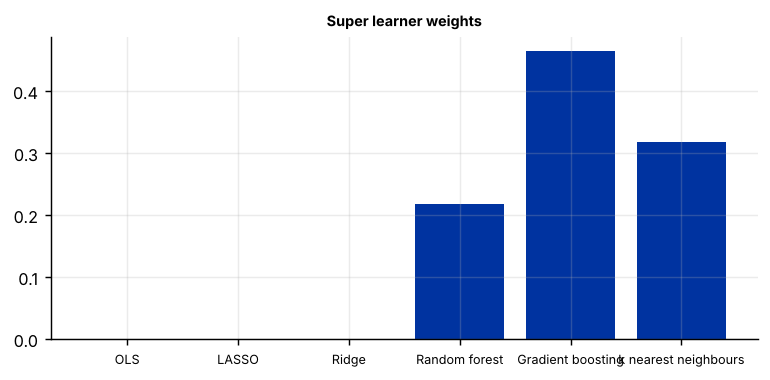

Run this model on your own data in Open Econometric Systems →
Step 1The question and the method
Can a weighted average of models predict better than any one of them? With \(L\) learners, each is fitted on \(K-1\) folds and used to predict the remaining fold, giving a cross-validated prediction \(\hat y_{i\ell}\) for every training observation. The weights solve
a non-negative least-squares problem (van der Laan, Polley and Hubbard 2007). Every learner is then refitted on the whole training sample and the final prediction is the weighted average. Non-negativity keeps the ensemble stable when learners are highly correlated. The discrete super learner keeps only the learner with the lowest cross-validated risk; the weighted version can do no worse than it in the cross-validated sample, and in large samples it performs as well as the best weighted combination in the library.
Three things to settle before you stack
- Is the library diverse? An ensemble of five random forests adds nothing. Include a linear model, a regularised one and at least one flexible nonlinear learner.
- Is the evaluation clean? The weights are fitted on cross-validated predictions of the training set, so the test sample must stay untouched.
- Is the gain worth the complexity? If the weights collapse onto one learner, report that learner.
How to write it: the model
We predict the log salary of 353 Major League Baseball players from 15 career statistics. The library has six learners: OLS, LASSO and ridge (penalties chosen by cross-validation), a random forest, gradient boosting and k-nearest neighbours (k = 10). On 75% of the sample, we compute five-fold cross-validated predictions for each learner and obtain non-negative weights summing to one by non-negative least squares (van der Laan, Polley and Hubbard 2007). We compare the weighted ensemble, the best single learner and an equal-weight average on the remaining 25% by RMSE and R-squared.
Step 2Load the data
import numpy as np
import pandas as pd
import oes_engine as oes # pip install -e open-econometric-systems/oes-engine
data = open("mlb1.csv").read()
df = pd.read_csv("mlb1.csv")
xs = [c for c in df.columns if c != "lsalary"]
print(len(df), "players;", len(xs), "predictors")
print(df.lsalary.describe().round(2).to_dict())353 players; 15 predictors
{'count': 353.0, 'mean': 13.49, 'std': 1.18, 'min': 11.6, '25%': 12.44, '50%': 13.42, '75%': 14.63, 'max': 15.66}How to read it
The 353 players have a mean log salary of 13.49 (about $720,000) with a standard deviation of 1.18, so a model that predicts the mean has an RMSE of about 1.18. The sample is small, which matters twice: the cross-validated risk is noisy, and the test sample has only 89 players.
Step 3Fit the ensemble
spec = dict(y="lsalary", x=xs, test_share=0.25, folds=5)
r = oes.run("stacking", data, spec)
oes.summary(r)
oes.show(r, "Learner weights")Observations: 353
Learners: 6
Test RMSE, super learner: 0.6322
Test RMSE, best single learner (chosen on the test set): 0.6256
Test R-squared, super learner: 0.7052
Largest weight: Gradient boosting
Learner weights, cross-validated risk and test performance
Weight 5-fold CV RMSE (training) Test RMSE Test R-squared
Learner
OLS 0.0 0.9153 0.9371 0.3523
LASSO 0.0 0.9181 0.9006 0.4017
Ridge 0.0 0.8899 0.9127 0.3856
Random forest 0.2182 0.6573 0.6256 0.7114
Gradient boosting 0.4643 0.6602 0.6827 0.6563
k nearest neighbours 0.3175 0.6855 0.6666 0.6723
Super learner (weighted average) 1.0000 0.6433 0.6322 0.7052
Discrete super learner (Random forest) 0.6573 0.6256 0.7114
Equal weights 0.1667 0.7270 0.6101
Note: Weights solve a non-negative least-squares problem on the cross-validated predictions and are rescaled to sum to one. The CV RMSE of the weighted average is optimistic because the weights were fitted on the same predictions; the test columns are not.How to read it
The three linear learners get weight zero. Their cross-validated RMSEs are 0.89 to 0.92, against 0.66 to 0.69 for the forest, boosting and nearest neighbours, which share the weight: boosting 0.46, nearest neighbours 0.32, forest 0.22. The relation between salary and career statistics is clearly nonlinear (the test R-squared is 0.35 for OLS and 0.71 for the ensemble). The weighted ensemble has a test RMSE of 0.632 (R-squared 0.705), against 0.626 for the forest, the best single learner on this test set, 0.683 for boosting and 0.667 for nearest neighbours, and 0.727 for an equal-weight average that includes the three linear learners. The ensemble is not better than the forest in this sample: the difference of 0.006 is far inside the noise of an 89-player test sample.
Step 4Why the weights look like this
oes.show(r, "Correlation of the cross-validated")
oes.plot(r, "Super learner weights", ncols=1, size=(6, 3))Correlation of the cross-validated predictions
OLS LASSO Ridge Random forest Gradient boosting k nearest neighbours
Learner
OLS 1.000 0.969 0.966 0.780 0.741 0.821
LASSO 0.969 1.000 0.975 0.778 0.733 0.821
Ridge 0.966 0.975 1.000 0.794 0.757 0.831
Random forest 0.780 0.778 0.794 1.000 0.979 0.952
Gradient boosting 0.741 0.733 0.757 0.979 1.000 0.933
k nearest neighbours 0.821 0.821 0.831 0.952 0.933 1.000
Note: Highly correlated learners are substitutes: the weights are shared among them, and adding a similar learner changes little.
How to read it
The cross-validated predictions of OLS, LASSO and ridge correlate 0.97 with each other, and those of the forest and boosting 0.98, so within each group the learners are substitutes and the weights are shared between them rather than being meaningful one by one. The correlation between a linear learner and a tree-based one is 0.73 to 0.79. The linear learners add nothing the nonlinear ones do not already have, which is why they get zero weight. Do not read a weight of 0.22 against 0.46 as a ranking: with correlated learners it is the total weight on a family that carries information.
Step 5How much does the answer depend on the split?
rows = []
for share in (0.2, 0.25, 0.33, 0.4):
for folds in (5, 10):
rr = oes.run("stacking", data, dict(y="lsalary", x=xs, test_share=share, folds=folds))
s = {x["label"]: x["value"] for x in rr["summary"]}
w = {x[0]: float(x[1]) for x in rr["tables"][0]["rows"][:6]}
rows.append([share, folds, s["Test RMSE, super learner"], s["Test RMSE, best single learner (chosen on the test set)"], w["Random forest"], w["Gradient boosting"], w["k nearest neighbours"], w["OLS"] + w["LASSO"] + w["Ridge"]])
print(pd.DataFrame(rows, columns=["test share", "folds", "super learner", "best single", "w forest", "w boosting", "w kNN", "w linear"]).round(3).to_string(index=False)) test share folds super learner best single w forest w boosting w kNN w linear
0.20 5 0.676 0.654 0.000 0.583 0.417 0.0
0.20 10 0.683 0.654 0.049 0.641 0.310 0.0
0.25 5 0.632 0.626 0.218 0.464 0.318 0.0
0.25 10 0.626 0.626 0.433 0.287 0.280 0.0
0.33 5 0.624 0.621 0.336 0.405 0.259 0.0
0.33 10 0.620 0.621 0.370 0.313 0.317 0.0
0.40 5 0.625 0.630 0.566 0.160 0.275 0.0
0.40 10 0.632 0.630 0.348 0.425 0.227 0.0How to read it
The weight on the linear learners is zero in all eight runs, so that conclusion is stable. The split between the three nonlinear learners is not: the forest gets between 0.00 and 0.57, boosting between 0.16 and 0.64. The test RMSE of the ensemble is between 0.62 and 0.68 and is within 0.03 of the best single learner chosen on the test set (the best single learner is chosen after seeing the test data, so it flatters the benchmark). The ensemble is never far behind the best learner without having to know in advance which learner that is, and this is what it is for.
Step 6Write the results
How to write it: results
The relationship between player statistics and salary is nonlinear: in a 25% hold-out sample OLS has a test R-squared of 0.35 and the random forest 0.71. The super learner gives zero weight to OLS, LASSO and ridge and divides the weight among boosting (0.46), nearest neighbours (0.32) and the forest (0.22). Its test RMSE of 0.632 (R-squared 0.705) is close to that of the best single learner (0.626, forest), which cannot be identified in advance, and well below an equal-weight average of all six learners (0.727). The weights on individual nonlinear learners change with the split and the number of folds, while the zero weight on the linear learners does not, so we interpret the result as favouring tree-based and nearest-neighbour methods over linear ones and do not rank the three nonlinear learners.
| Report | What | Where |
|---|---|---|
| Method | Cross-validated predictions, non-negative weights | Step 1 |
| Data | Outcome and predictors | Step 2 |
| Ensemble | Weights, CV risk, test RMSE | Step 3 |
| Weights | Correlation among learners | Step 4 |
| Robustness | Test share and folds | Step 5 |
References. Wolpert, D. (1992), "Stacked Generalization," Neural Networks 5. Breiman, L. (1996), "Stacked Regressions," Machine Learning 24. van der Laan, M., Polley, E. and Hubbard, A. (2007), "Super Learner," Statistical Applications in Genetics and Molecular Biology 6. Polley, E. and van der Laan, M. (2010), "Super Learner in Prediction," UC Berkeley Division of Biostatistics Working Paper 266. Hastie, T., Tibshirani, R. and Friedman, J. (2009), The Elements of Statistical Learning, 2nd ed., Springer.